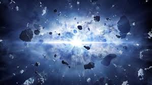
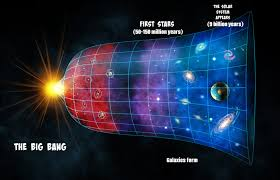
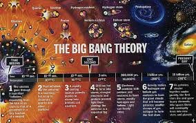
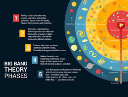
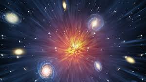
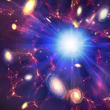

The Photo Gallery






Description
The Big Bang Theory is the leading explanation for how the universe began.
It describes the universe's inception as a singularity, an infinitely
small and dense point, which rapidly expanded about 13.8 billion years
ago.
Breaking Down this Facsinating Theory:
-
The Singularity and the Initial Expansion
-
Singularity: The universe started as an incredibly hot and dense
point, where all the laws of physics as we know them break down.
-
Initial Expansion: This point underwent a sudden and massive
expansion, not an explosion in space, but an expansion of space
itself. This event is what we refer to as the Big Bang.
-
The Early Universe
-
Inflation: Immediately following the Big Bang, the universe expanded
exponentially in a fraction of a second, a process known as cosmic
inflation.
-
Cooling and Formation of Particles: As the universe expanded, it
cooled down, allowing quarks and gluons to form protons and
neutrons.
-
Nucleosynthesis: Within the first few minutes, these protons and
neutrons combined to form the nuclei of light elements like
hydrogen, helium, and small amounts of lithium.
-
Formation of Atoms and Cosmic Background Radiation
-
Recombination: About 380,000 years after the Big Bang, electrons
combined with nuclei to form neutral atoms, mostly hydrogen. This
process is called recombination.
-
Cosmic Microwave Background (CMB): The decoupling of matter and
radiation allowed photons to travel freely, creating the CMB, which
we can observe today as a faint glow pervading the universe. The CMB
is considered the afterglow of the Big Bang and provides a snapshot
of the early universe.
-
Formation of Structure
-
Dark Matter: Invisible and mysterious, dark matter began to clump
due to gravity, providing the scaffolding for the formation of
galaxies and larger structures.
-
Galaxy Formation: Gas condensed into the first stars and galaxies
about 400 million years after the Big Bang, marking the beginning of
the "Cosmic Dawn".
-
Cosmic Web: Over billions of years, these galaxies grouped into
clusters and superclusters, forming a vast, intricate cosmic web.
-
Evidence Supporting the Big Bang Theory
-
Hubble’s Law: Edwin Hubble discovered that galaxies are moving away
from us, and the farther they are, the faster they move, indicating
that the universe is expanding.
-
CMB: The discovery of the CMB in 1965 provided strong evidence for
the Big Bang, as it matches predictions for the remnant radiation
from the early universe.
-
Abundance of Light Elements: Observations of the relative
proportions of hydrogen, helium, and lithium in the universe align
with the predictions of Big Bang nucleosynthesis.
-
Current Understanding and Open Questions
-
Dark Energy: Observations suggest the universe's expansion is
accelerating, driven by a mysterious force termed dark energy.
-
Early Universe Mysteries: Questions about what caused the Big Bang,
the nature of the singularity, and what, if anything, preceded it
remain topics of intense research and speculation.